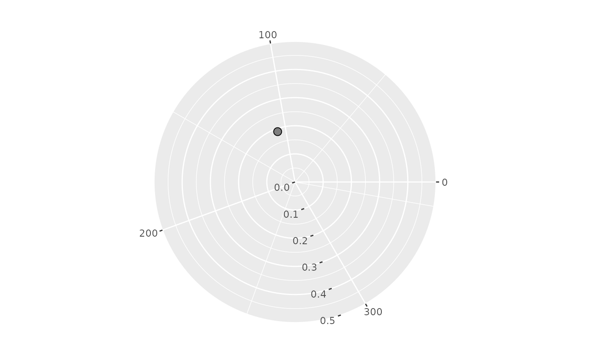

A ggplot2 coordinate system that maps Structural Summary Method
parameters onto the circular circumplex canvas: the displacement aesthetic
(degrees, counterclockwise from the right, with the 0/360 pole labelled 360)
becomes the angle and the amplitude aesthetic becomes the radius. It owns
the amplitude-to-radius scaling, so geom_ssm_point() and geom_ssm_arc()
no longer take an amax, and the canvas and data layers can never disagree.
Arguments
- amax
Optional. A single positive number giving the amplitude represented by the outer ring.
NULL(the default) trains it from the data (asssm_plot_circle()does).- center
Optional. A single number giving the amplitude at the center of the circle (default = 0). Ring labels and the amplitude-to-radius mapping are guaranteed to agree.
- r_axis_angle
Optional. A single number giving the displacement (in degrees) along which the amplitude (radial) axis and its labels are drawn.
NULL(the default) places it automatically in the widest gap between the displacement spokes, so the amplitude labels never collide with a spoke label.- ...
Reserved for future extensions; currently unused.
Details
coord_circumplex() subclasses ggplot2::coord_radial() and hard-pins the
angular convention (displacement 0 at the right, increasing counterclockwise,
the 0/360 range with no expansion) so the circumplex angle invariants survive
the transform. The amplitude at the circle's center and at its outer ring are
the radial limits, set once here.
See also
Other circumplex layers:
geom_ssm_arc(),
geom_ssm_path(),
geom_ssm_point(),
ggcircumplex(),
scale_x_circumplex(),
theme_circumplex()
Examples
data("jz2017")
res <- ssm_analyze(jz2017, scales = 2:9, measures = "NARPD")
ggplot2::ggplot(res$results) +
coord_circumplex(amax = 0.5) +
geom_ssm_point(ggplot2::aes(amplitude = a_est, displacement = d_est))
